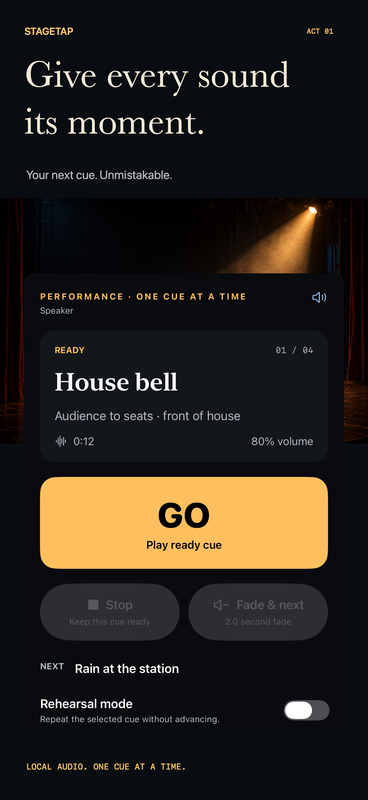
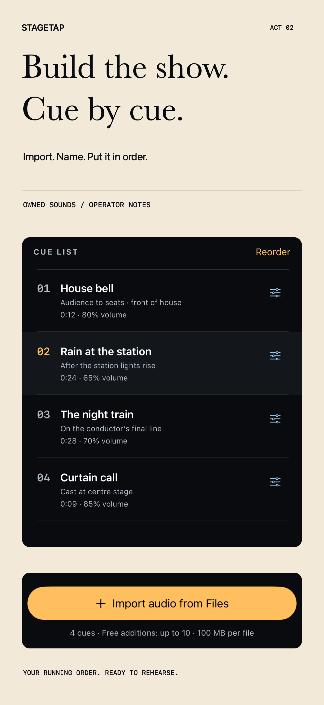
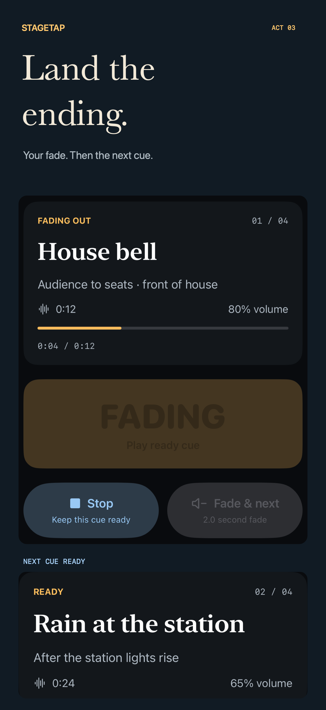
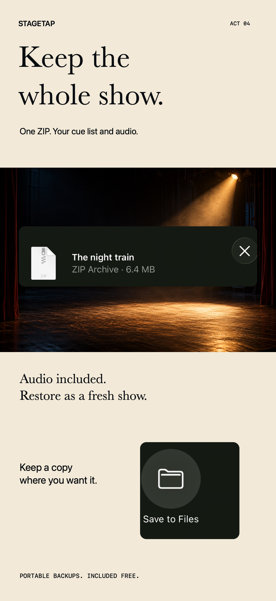
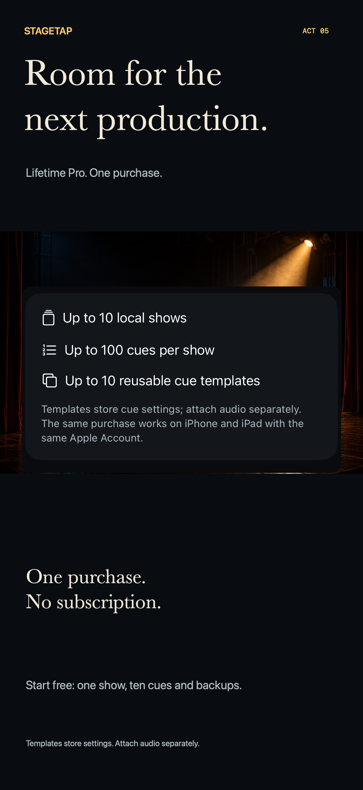
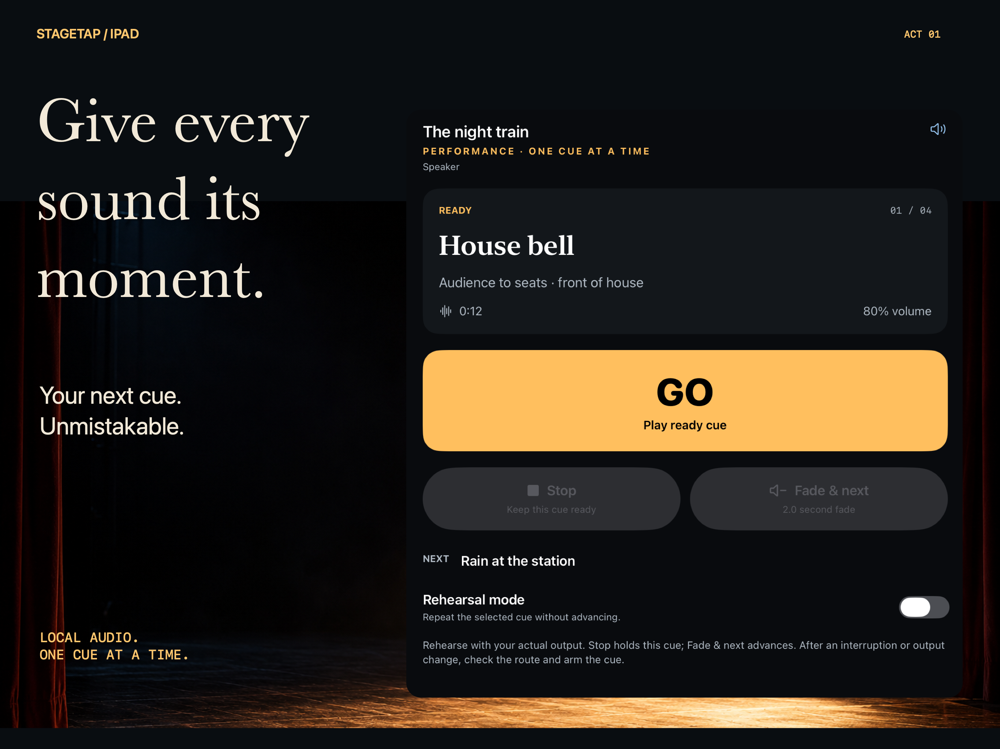
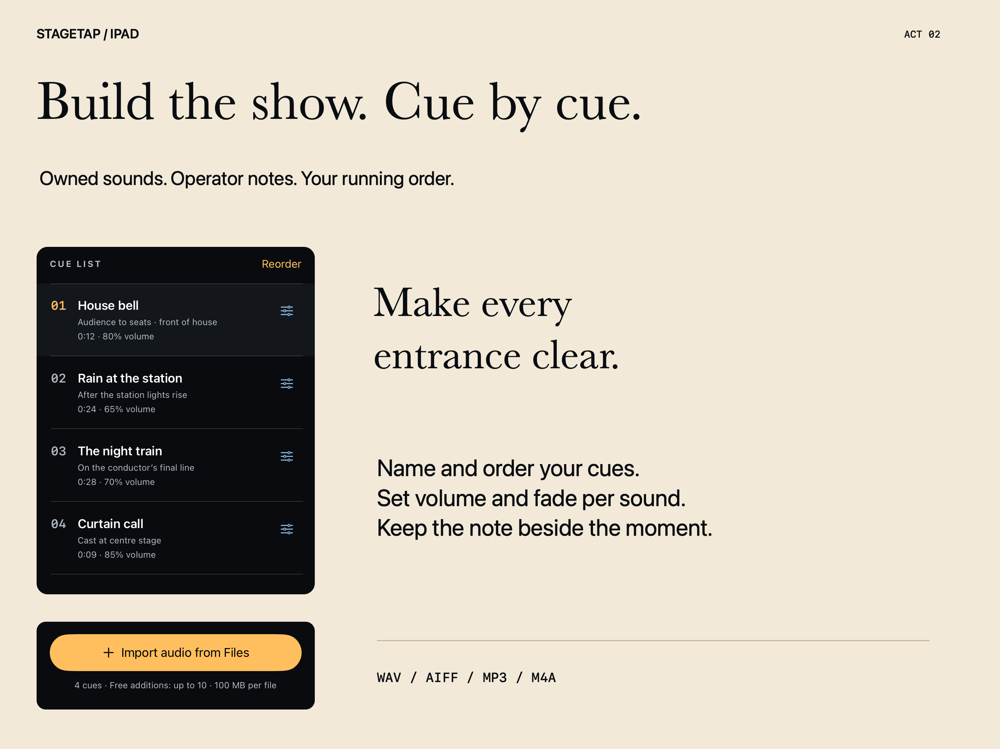
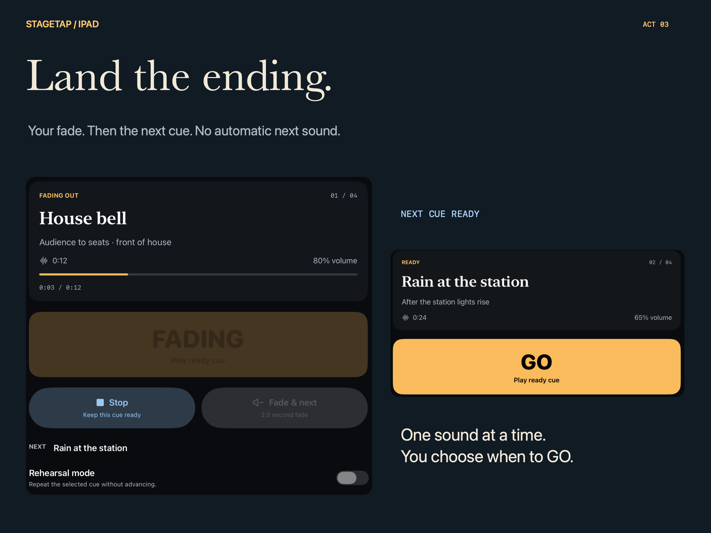
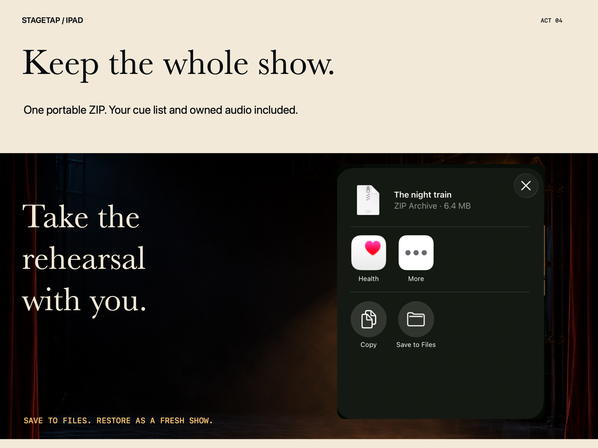
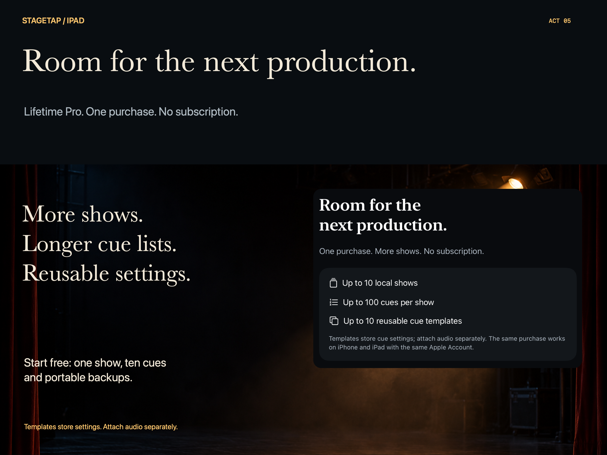

01 / PREPARE
Build the show
Import owned local WAV, AIFF, MP3 or M4A files. Name and arrange cues, add operator notes and choose each cue’s volume and fade.
Local theatre sound cues · iPhone + iPad
Prepare the cue list. See what’s ready. Give each moment its sound with a clear, deliberate GO.
In production · not submitted or releasedOne free show, ten cues and portable backup. Lifetime Pro adds more shows, longer lists and cue templates. The app’s release is still in preparation.

One sound at a time
01 / PREPARE
Import owned local WAV, AIFF, MP3 or M4A files. Name and arrange cues, add operator notes and choose each cue’s volume and fade.
02 / PLAY
GO plays one ready cue. Stop holds that cue. Natural completion or Fade & next advances the list. The next sound never starts automatically.
03 / KEEP
Save a ZIP with the cue list and owned audio. Restore it as a fresh show. Keep a copy outside the app before deleting local content.
The campaign




A dedicated iPad campaign





Product + engineering case study
A tested state machine separates GO, Stop, fade and rehearsal intent from AVAudioPlayer callbacks. A rapid-tap cooldown and generation tokens prevent duplicate or stale completions from skipping cues. Interruptions and output disconnects hold the cue for manual rearming.
AVFoundation fully decodes selected media before adoption. Streamed hashing, atomic manifests and staged folder moves protect accepted shows. Backups validate CRC, declared hashes, file bounds and audio before restoring with fresh identities.
One show with up to ten cues includes playback controls, rehearsal mode and portable backup. A one-time Lifetime Pro purchase adds up to ten shows, one hundred cues per show and ten cue-setting templates. Templates do not contain audio.
Twenty-two targeted core, native playback and local StoreKit tests pass on iOS 17. The current simulator UI checks cover creation, playback, cue editing and Files import. Physical audio-route and Apple Sandbox verification, final signing and App Review submission remain open.
| Native stack | SwiftUI, AVAudioPlayer, AVAudioSession, StoreKit 2, CryptoKit, Files |
| Compatibility | Universal iPhone and iPad; iOS/iPadOS 15 deployment target. Actual runtime evidence begins at iOS 17; an iOS 15 runtime is unavailable. |
| Data model | Versioned local manifests, owned encoded audio, portable ZIP STORE packages, recoverable show Trash |
| Privacy design | No developer account, backend, tracking or analytics uploader. Apple manages purchases. |
| Release status | In production. App Store record created; not submitted or released. TestFlight skipped by publisher instruction. |
Commercial source is backed up privately. This public project presents product thinking, native engineering and the original campaign; it does not contain the commercial app source.
Rehearse the whole show with your actual output. StageTap deliberately plays one cue at a time; it does not provide overlap, synchronized show control or professional failover.
Read the workflow and limits